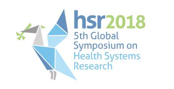

News · October 2018
VAPAR at the 5th Global Symposium on Health Systems Research, Liverpool

We contributed to the Fifth Global Symposium on Health Systems Research in Liverpool, 8–12 October 2018 — a biennial symposium bringing together researchers, policy-makers and other stakeholders to share evidence, discuss methods and facilitate collaboration.
Denny Mabetha, VAPAR Coordinator, led two photovoice submissions of visual evidence developed with community stakeholders in the MRC/Wits Agincourt study area: ‘Water is life’ and ‘It destroys families and communities’ on alcohol and drug abuse. Denny’s work highlighted community-defined health priorities using digital storytelling, and was exhibited both at the Symposium and at the Museum of Liverpool.
Dr Oghenebrume Wariri gave an oral presentation on his dissertation research, “Rethinking collaboration: developing knowledge partnerships to address under-5 mortality in Mpumalanga province”, and joined a panel on planning, service delivery and financing strategies for vulnerable groups. Eilidh Cowan presented a poster on combining routine surveillance data with local knowledge on non-communicable diseases. Lisa Thomas presented a poster on verbal autopsy in health policy and systems, work since published in BMJ Global Health.